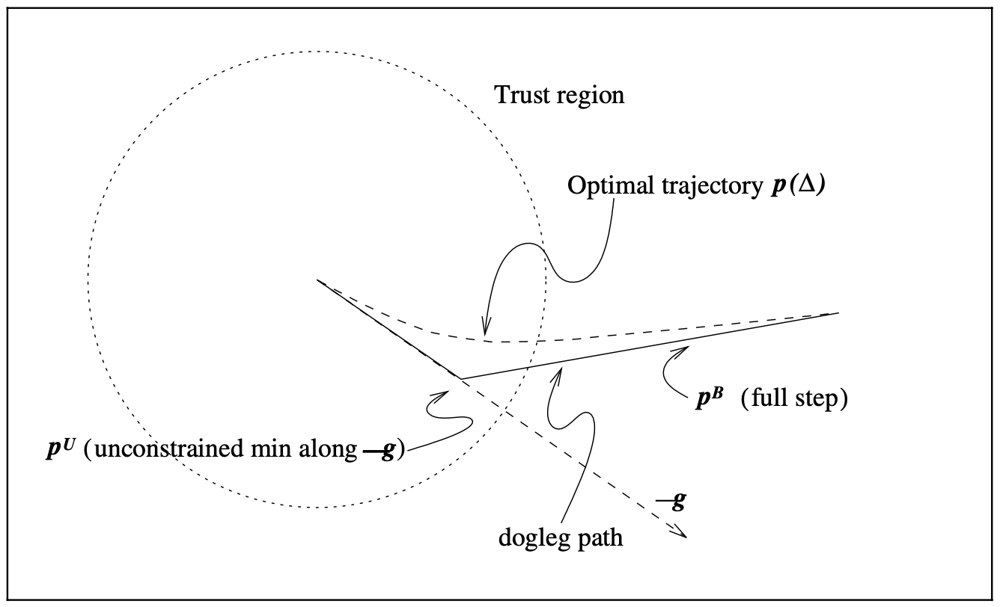

4.1 Algorithms Based on the Cauchy Point¶
The Cauchy Point¶
It is enough for purposes of global convergence to find an approximate solution \(p_k\) that lies within the trust region and gives a sufficient reduction in the model. The sufficient reduction can be quantified in terms of the Cauchy point, denoted by \(p_k^c\).
The closed-form solution to the first subproblem is simply
By considering \(g_k^\top B_kg_k \leq 0\) and \(g_k^\top B_kg_k > 0\) separately, we have
where
The Cauchy step \(p_k^c\) is inexpensive to calculate and is of crucial importance in deciding if an approximate solution of the trust-region subproblem is acceptable. Specifically, a trust-region method will be globally convergent if its steps \(p_k\) give a reduction in the \(m_k\) that is at least some fixed positive multiple of the decrease attained by the Cauchy step.
Improving on the Cauchy Point¶
The Cauchy point is simply the steepest descent method with a particular choice of step lengths. Steepest descent methods perform poorly even if an optimal step length is used at each iteration. Now we focus on the trust-region subproblem
and we denote the solution by \(p^*(\delta)\).
The Dogleg method¶
The dogleg method an be used when \(B\) is positive definite. The unconstrained minimizer of \(m\) is \(p^B = -B^{-1}g\), so we have
When \(delta\) is small relative to \(p^B\), the restriction \(\lVert p \rVert \leq \delta\) ensures that the quadratic term in \(m\) has little effect on the solution, and we can get an approximation to \(p(\delta)\) by omitting the qudaratic term and writing
For intermediate values of \(\delta\), the solution \(p^*(\delta)\) typically follows a curved trajectory like the one in the figure below.
{kind=link}
The dogleg method finds an approximate solution by replacing the curved trajectory for \(p^*(\delta)\) with a path consisting of two line segments. The first line segment runs from the origin to the minimizer of \(m\) along the steepest descent direction, which is
while the second line segment runs from \(p^U\) to \(p^B\). We denote this trajectory by \(\tilde{p}(\tau)\) for \(\tau \in [0, 2]\), where
The dogleg method chooses \(p\) to minimize the model \(m\) along this path.
Lemma 4.2. Let \(B\) be positive definite, then 1. \(\lVert \tilde{p}(\tau) \rVert\) is an increasing function of \(\tau\) 2. \(m(\tilde{p}(\tau))\) is a decreasing function of \(\tau\)
It follows that the chosen value \(p\) will be at \(p^B\) if \(\lVert p^B \rVert \leq \delta\), otherwise at the point of intersection of the dogleg and the trust-region boundary.
When the exact Hessian \(\nabla^2 f(x_k)\) is available, we find the Newton-dogleg step. We conclude that the Newton-dogleg method is most appropriate when the objective function is convex (when \(\nabla^2 f(x_k)\) is always positive semidefinite).
Two-Dimensional Subspace Minimization¶
The dogleg method can be made slightly more complicated by widening the search for \(p\) to the entire two-dimensional subspace spanned by \(p^U\) and \(p^B\). The subproblem is repalced by
It can be reduced to finding the roots of a fourth degree polynomial. Clearly the Cauchy point \(p^C\) is feasible, resulting in global convergence of the algorithm.